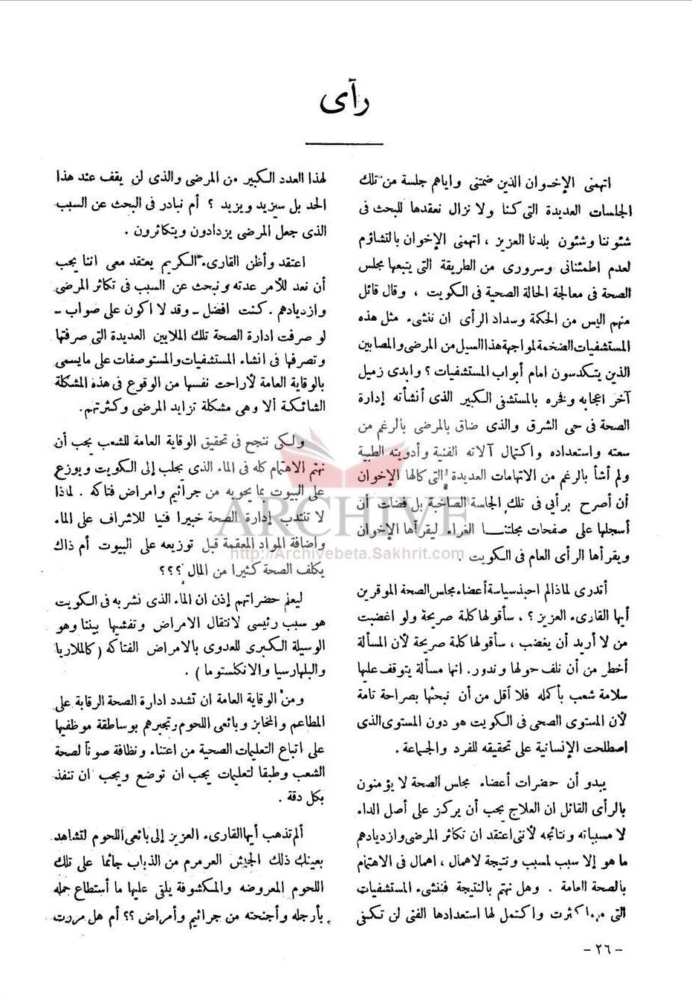
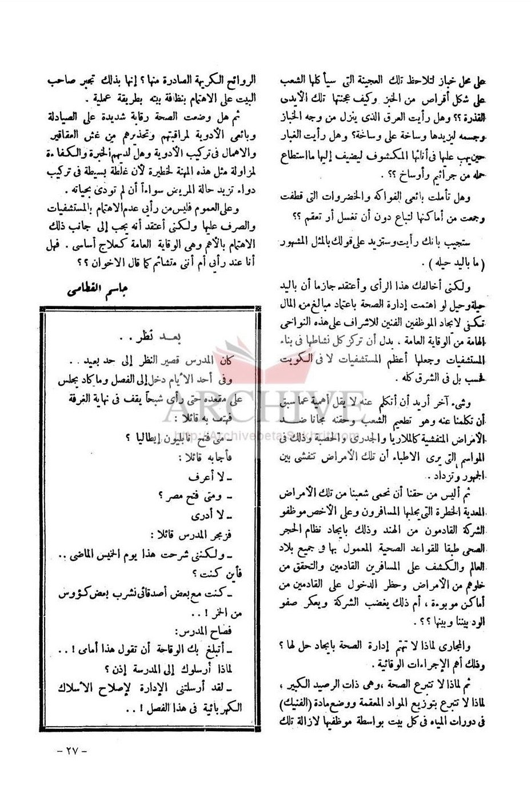
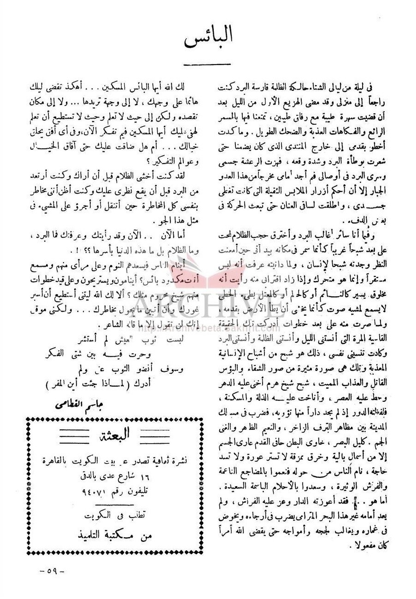
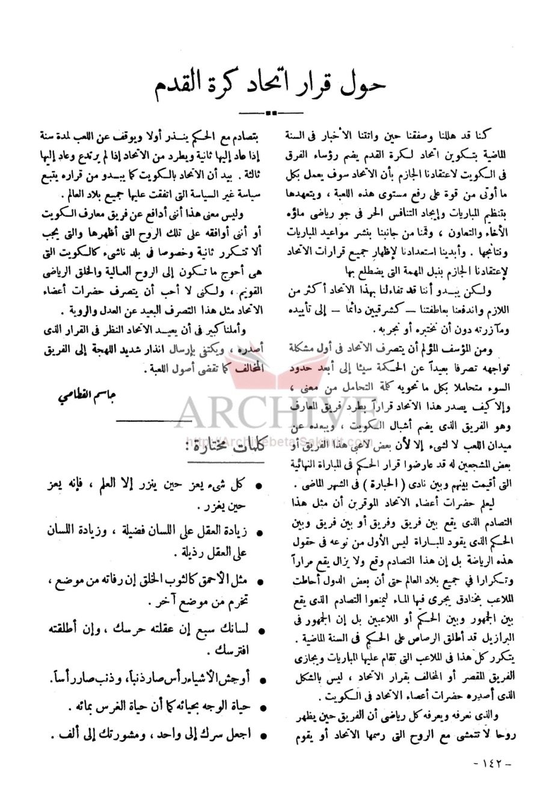
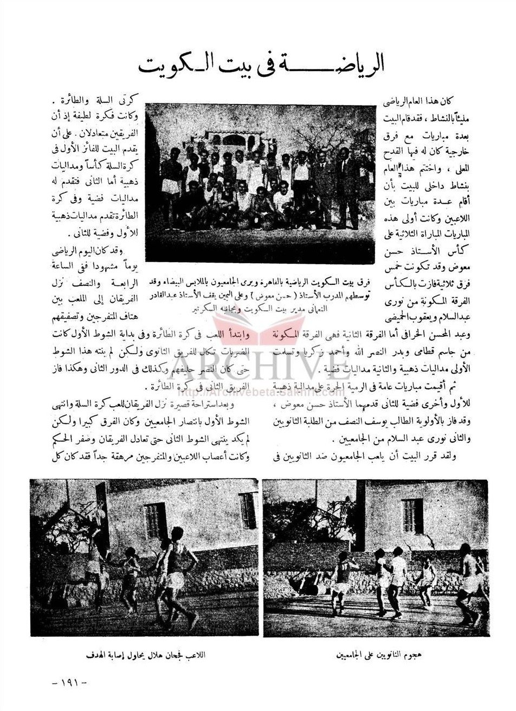
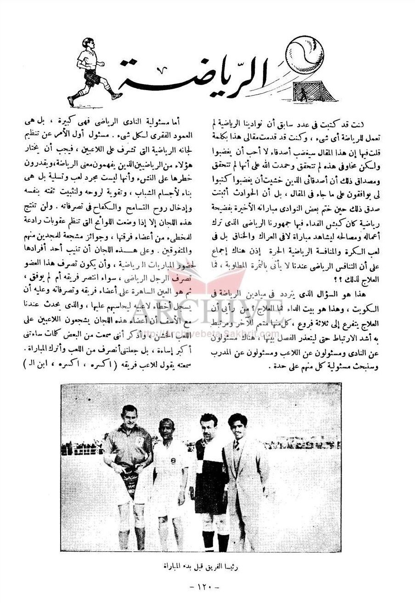
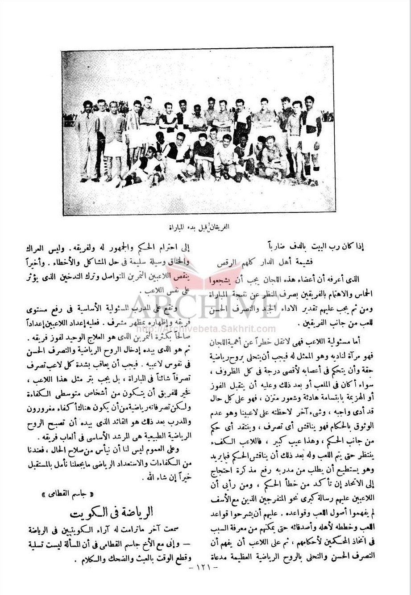
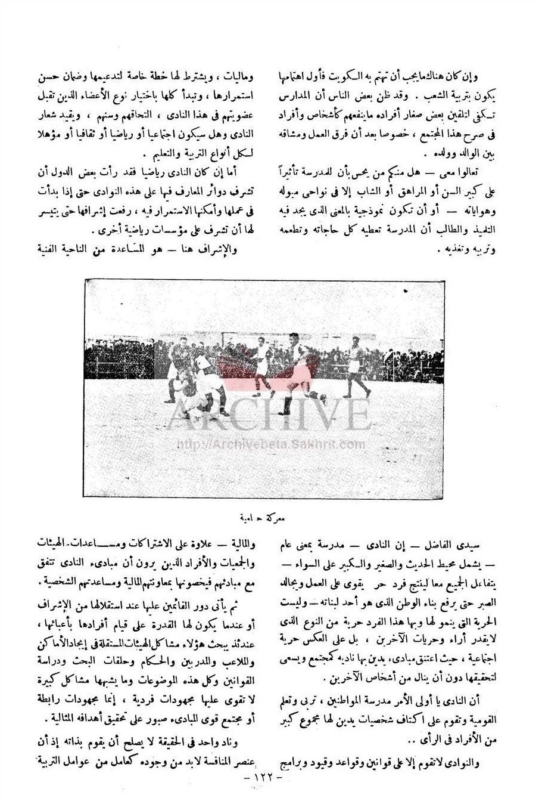
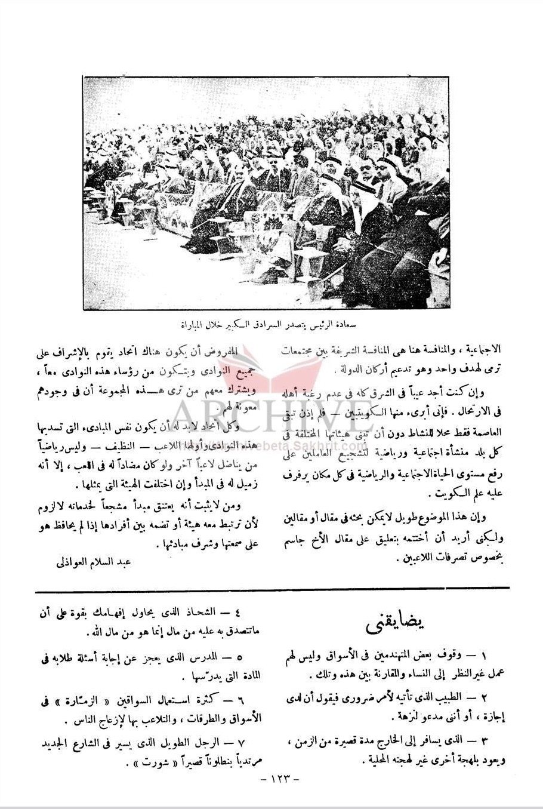

١٩٥٠ إلى ١٩٥٣م، البعثة · صفحات من مجلة البعثة، ١٩٥٠ إلى ١٩٥٣م، أعاد طبعها مركز البحوث والدراسات الكويتية، الكويت، ١٩٩٧
جاسم القطامي في البعثة ١٩٥٠ إلى ١٩٥٣م: «البوليس» ومقالاته في الرياضة، ومع عبداللطيف ويعقوب في فرق بيت الكويت
ما هي
١. في ٢٣ مارس ١٩٥٠م لعب جاسم قطامي في فريق كرة السلة الفائز في الحفل الرياضي لبيت الكويت بالقاهرة، وألقى كلمة عن تطور الرياضة في البيت منذ ١٩٤٥م، ولعب يعقوب قطامي الكرة الطائرة. ٢. وفي مايو ١٩٥٠م كتب جاسم من كلية البوليس الملكية مقال «البوليس» عن إعداد رجل الشرطة وأخلاقه. ٣. ومن ١٩٥١ إلى ١٩٥٣م كتب «رأي» و«البائس» و«حول قرار اتحاد كرة القدم» و«المشكلة الكبرى» ومقالين بعنوان «الرياضة». ٤. وفي مايو ١٩٥١م يذكر تقرير مهلهل المضف عن الرياضة في بيت الكويت جاسم وعبداللطيف ويعقوب قطامي بين اللاعبين.
أهميتها
مقالات جاسم الموقعة من سنوات دراسته في كلية الشرطة، وطلاب العائلة في فرق بيت الكويت.
صور الصفحات













المصادر
البعثة، ١٩٥٠ إلى ١٩٥٣م، أعاد طبعها مركز البحوث والدراسات الكويتية، الكويت، ١٩٩٧؛ العدد والصفحة مع كل صورة
كيف كُتب هذا النص: «قاسم قطامي» الذي تحدث في حفل ١٩٥٠م غير معروف في شجرة العائلة.
افتح في الموقع التفاعلي